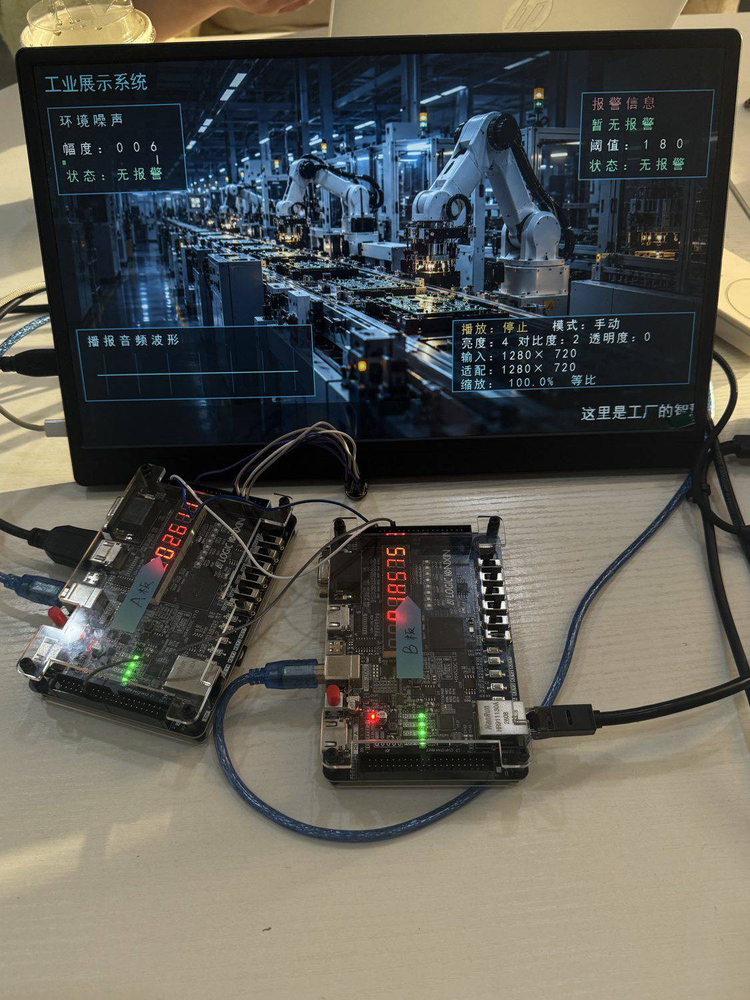
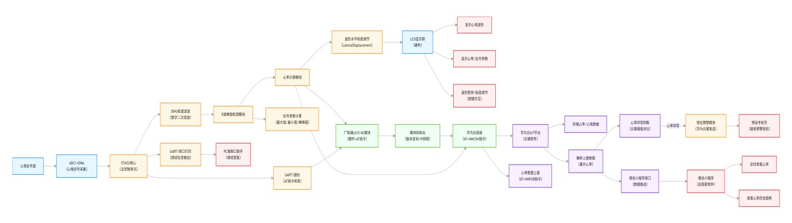
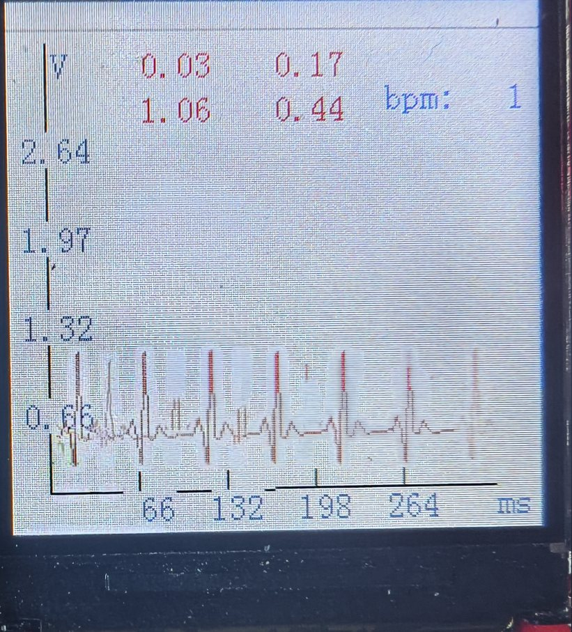
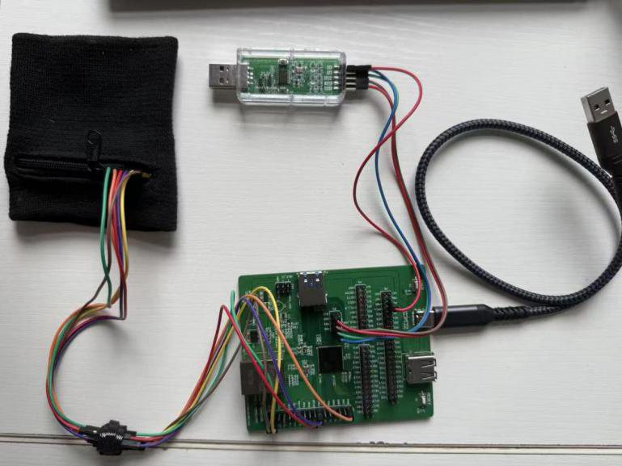
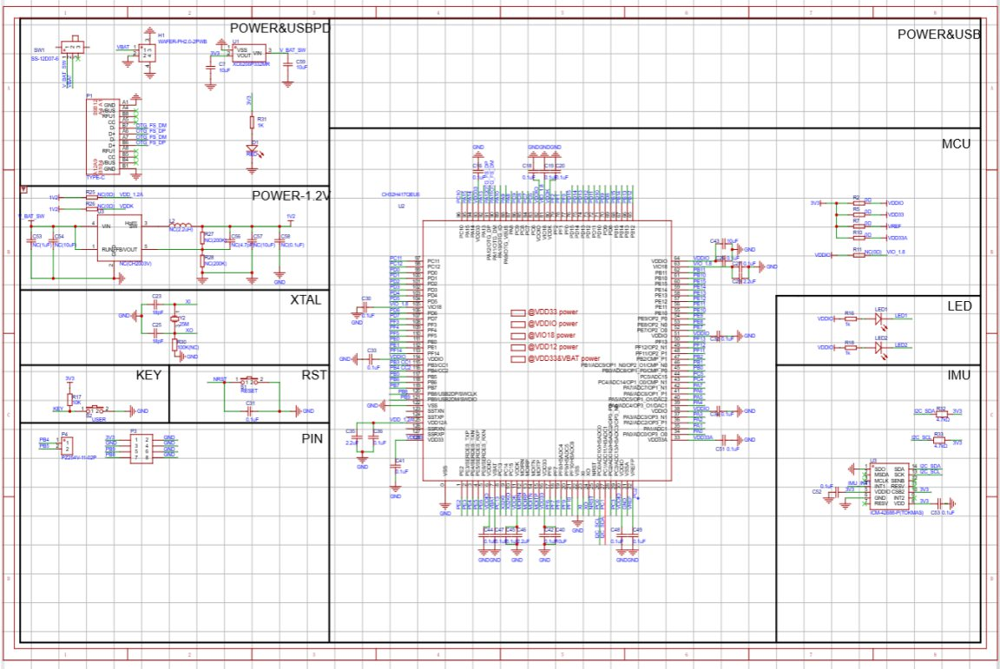

把想法
做成系统。
你好，我是郑茜彤，南京大学通信工程专业本科生。关注通信系统、数字电路与逻辑设计、嵌入式软硬件、硬件开发及系统集成测试。
关于我
从信号、电路到系统集成，喜欢把分散的模块连成能运行、能验证的完整作品。
目前就读于南京大学电子科学与工程学院通信工程专业。课程与项目实践覆盖 FPGA 多媒体系统、单片机信号采集显示和嵌入式交互终端，积累了从方案设计、软硬件实现到系统联调与交付的实践经验。
项目经历
点击项目卡片展开技术方案、负责内容和验证方式。
01安芯应急智显终端
安路 FPGA 多媒体发布与声音监测系统
安芯应急智显终端
系统全貌 面向应急信息发布与声音监测，系统由显示主板、网络副板和 PC 监测端组成。显示主板负责 TF 卡图片/视频读取、画面处理与 HDMI 输出，并集成音频播放、同步字幕、声音波形和应急报警；网络副板与 PC 端协同完成设备状态、历史数据、报警记录和远程阈值管理。
我的贡献 作为项目负责人，统筹需求梳理与总体方案，主导 FPGA 与 PC 端开发，推进双板接口设计、软硬件集成、上板联调和工程交付，贯通从功能规划到整机验证的完整流程。
关键成果 针对存储与 TF 卡带宽约束设计离线视频预处理及 FPGA 适配格式，在 640×360、25 fps 条件下将播放数据吞吐较原始 RGB565 流降低约 93.7%；完成多媒体显示、声音监测与报警、网络数据交互及远程阈值设置的系统集成，并通过模块仿真和双板联调验证。
技术能力 FPGA/RTL 设计与验证、视频与图像数据处理、HDMI 显示、音频与同步字幕、UART 板间通信、PC 端软件开发、网络数据交互、软硬件系统集成与调试。

02心电信号采集显示系统
电子学基础实验 II · 采集、显示与异常提示
心电信号采集显示系统
系统全貌 面向心电模拟信号观测，构建“模拟信号调理—单片机采集处理—LCD 波形显示—异常提示”的完整链路，支持心率估算、幅值自适应和按键时基切换。
我的贡献 作为团队成员参与 STM32F429 系统开发与整机联调，承担采集、处理、波形显示和提示功能相关工作，配合打通信号输入到屏幕显示及报警反馈的软硬件链路。
关键成果 完成心电模拟信号的采集显示与超阈值声光提示功能；针对显示闪烁改进波形刷新方式，并使用信号发生器完成系统功能验证。
技术能力 STM32F429 固件开发、ADC 与定时器采样、DMA 数据缓冲、SPI/LCD 驱动、波形显示、嵌入式调试与信号验证。


03穿戴式手势交互终端
基于 CH32H417 · 嵌入式系统设计竞赛
穿戴式手势交互终端
系统全貌 项目面向非接触式计算机交互，使用 ICM42688 六轴惯性传感器采集手部动作，由 CH32H417 端侧识别手势，再通过 USB HID 输出键盘与鼠标操作。
我的贡献 作为团队成员，主要负责项目后期 PCB 制作相关工作，并配合硬件落地与系统集成；神经网络模型训练及相关代码由团队其他成员负责，本人未参与编写。
关键成果 支持手势控制光标、点击、滚动及键盘翻页等交互模式；本人负责的 PCB 制作工作为项目硬件集成和作品展示提供支持。
技术能力 PCB 制作与硬件落地、嵌入式主控与惯性传感器的硬件接口协同、板级集成与检查；了解系统从动作感知到 USB HID 输出的整体链路。


我的工程实践
项目中反复练习的，是把方案落到可运行的系统，并通过测试和联调找到问题所在。
梳理主控、传感、显示、通信和上位机之间的接口关系。
沿数据与控制链路分段检查，用仿真、仪器和日志缩小故障范围。
完成模块联调与功能验证，整理工程文件和可复现的测试结果。
期待参与真实工程。
欢迎交流通信、FPGA、嵌入式与硬件系统实践。